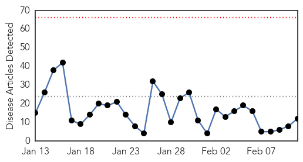
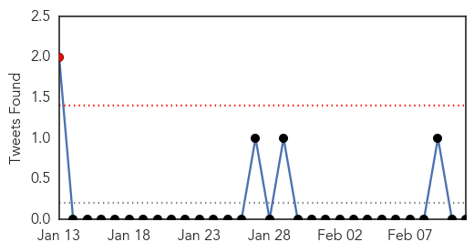

30 Day Trends
Web: 0 alerts, 0 warnings
Twitter: 1 alerts, 0 warnings
Top Articles:
- 1.000
- Flu Scan for Feb 11, 2015
- 0.999
- :: Influenza cases reach unusual high number this season
- 0.998
- Flu Outbreak in Hong Kong Causes 157 Deaths
- 0.994
- CDC calls for the public to take flu prevention steps as influenza spreads
- 0.987
- 6 things you need to know about flu vaccination, Others news, Health News, AsiaOne YourHealth
- 0.982
- 145 deaths this year as deadly flu bug hits Hong Kong, Others news, Health News, AsiaOne YourHealth
- 0.978
- South Bend-Elkhart among top U.S. cities with flu
- 0.967
- Death Toll in Local Flu Season Rises to 43, with 14 in Last Week
- 0.894
- SGGP English Edition- Vietnam makes concerted efforts to prevent spread of H7N9 viru in border crossigns
- 0.831
- Man dies of bird flu in northwest Yunnan
- 0.763
- Osun, experts on sensitisation drive
- 0.507
- 21 human cases of H7N9 bird ...｜Society｜WCT
Top Tweets:
-
No tweets found for Feb 11, 2015
Web/News Articles
Tweets
Article Locations